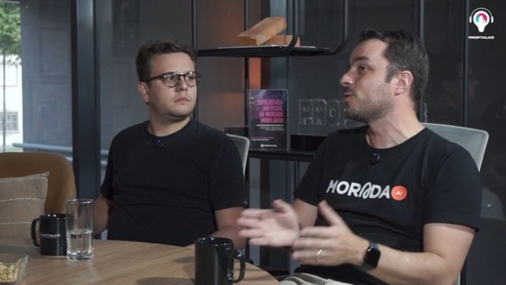
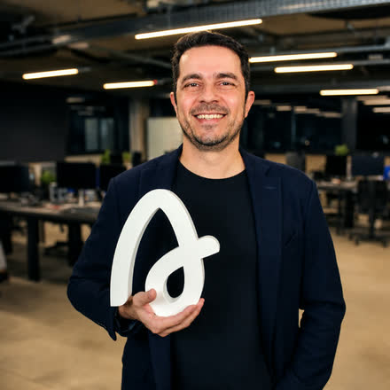
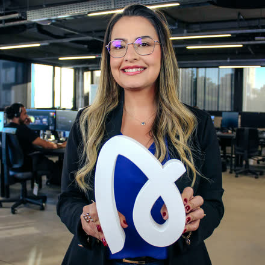

Sala de imprensa
A Morada.ai na imprensa.
A Morada.ai é o Sistema Operacional da Incorporação. A empresa nasceu em Belo Horizonte e usa agentes de IA para atender, qualificar e acompanhar os clientes de incorporadoras e construtoras.

Em resumo
- O que é
- O Sistema Operacional da Incorporação: plataforma de IA para incorporadoras e construtoras.
- Produto
- O Morada OS, que orquestra as agentes MIA Pré-vendas, MIA Copiloto e MIA Pós-vendas.
- Sede
- Belo Horizonte (MG). Fundada em 2021.
- Investimento
- R$ 23 milhões captados. A rodada de 2025 foi liderada pela Parceiro Ventures.
- Reconhecimentos
- Selo Cubo Dourado 2025, MoviMente 2024 (Secovi-SP), Ranking 100 Open Startups 2025 e Meta Business Solution Provider.
- Imprensa
- [email protected]
Destaques
O que saiu nos principais veículos.
Morada.ai capta R$ 17 milhões para agilizar compra do imóvel novo
09 dez 2025Ler ExameNa classe D e E, a Morada usa IA para explicar o financiamento da casa própria a quem não sabe ler
06 ago 2025Ler Forbes Brasil (Forbes Real Estate)Os Erros e Acertos Invisíveis do Uso de Inteligência Artificial, da Construção à Compra de Imóveis
30 jul 2026Ler UOL (Tilt, coluna Helton Simões Gomes)'Sua vaca': IA é alvo de machismo, e startup barra 4.800 pessoas
27 fev 2026Ler CartaCapital (Do Micro ao Macro)Inteligência artificial já está em 56,5% das incorporadoras brasileiras, aponta pesquisa
17 jun 2026LerOuça e assista
Podcasts e vídeos com a diretoria.

Proptalks #73Transformando o futuro com inteligência artificialRamon Azevedo · 14 nov 2024Ouvir GRI Institute · vídeoIncorporadoras aumentaram suas vendas com uso da IALuís Veloso · 03 out 2024Assistir Virando a Chave #33Tecnologia aliada ao corretor de imóveisLuís Veloso · 12 jun 2024OuvirTodas as publicações
Por ano, da mais recente à mais antiga.
Atualizada em .
2026
- 26 out 2026Diário do ComércioLinkedIn revela as 10 startups em destaque em Belo Horizonte em 2026; veja quais sãoMatéria
- 20 out 2026Imobi Report (newsletter News do Imobi)85% das Imobiliárias brasileiras atuam simultaneamente em vendas e locaçãoMatéria
- 19 out 2026Sinduscon-PRSinduscon + Tech IA reúne especialistas para debater o impacto da Inteligência Artificial na construção civilEvento
- 14 out 2026Diário do Comércio (coluna Finanças em Foco)Entre a Selic e a parcela: tecnologia pode aproximar crédito e capacidade de compraArtigo
- 11 set 2026Imobi ReportImobiliárias podem utilizar IA para apoiar a gestão de pessoasMatéria
- 25 ago 2026Mundo da InovaçãoMercado imobiliário: análise de crédito vira nova fronteira da IAMatéria
- 25 ago 2026Notícia Séria BrasilMercado imobiliário: análise de crédito vira nova fronteira da IAMatéria
- 31 jul 2026Canaltech (coluna Especialistas Convidados)A inteligência artificial está moldando um novo comprador de imóveisArtigo
- 31 jul 2026PortasIA avança no mercado imobiliário, mas exige transparência, dados e controle humanoMatéria
- 30 jul 2026Forbes Brasil (Forbes Real Estate)Os Erros e Acertos Invisíveis do Uso de Inteligência Artificial, da Construção à Compra de ImóveisMatéria
- 28 jul 2026Imobi ReportUm sistema operacional de inteligência para a incorporaçãoMatéria
- 24 jul 2026Gazeta do Povo (coluna Paraná S/A)Inteligência artificial nas incorporadoras avança em CuritibaMatéria
- 20 jul 2026Imobi ReportIncorporadoras de Curitiba viram laboratório de Inteligência ArtificialMatéria
- 01 jul 2026Podcast na Construção (Sienge, ao vivo no Construsummit 2026)Até onde a IA consegue prever o futuro na construçãoPodcast
- 25 jun 2026Imobi ReportCopa do Mundo e o imobiliário: dados, especialistas e campanhasMatéria
- 22 jun 2026TI Inside56,5% das incorporadoras brasileiras já utilizam IAMatéria
- 17 jun 2026CartaCapital (Do Micro ao Macro)Inteligência artificial já está em 56,5% das incorporadoras brasileiras, aponta pesquisaMatéria
- 16 jun 2026Imobi Report (newsletter News do Imobi)Imóveis ociosos na mira dos governosMatéria
- 11 jun 2026Joie de Vivre MondeMorada Summit 2026 reúne mais de 300 lideranças do setor imobiliário e lança soluções e pesquisas inéditasMatéria
- 09 jun 2026AN9Após gerar mais de R$ 15 bilhões em vendas, Morada.ai anuncia Morada Summit 2026 com foco na IA aplicada ao mercado imobiliárioMatéria
- 09 jun 2026Echo NotíciasApós gerar mais de R$ 15 bilhões em vendas, Morada.ai anuncia Morada Summit 2026 com foco na IA aplicada ao mercado imobiliárioMatéria
- 09 jun 2026El Madrid BrasilApós gerar mais de R$ 15 bilhões em vendas, Morada.ai anuncia Morada Summit 2026 com foco na IA aplicada ao mercado imobiliárioMatéria
- 09 jun 2026Estado de MinasMorada Summit 2026 debate inteligência artificial no mercado imobiliárioMatéria
- 09 jun 2026Nitro News BrasilApós gerar mais de R$ 15 bilhões em vendas, Morada.ai anuncia Morada Summit 2026 com foco na IA aplicada ao mercado imobiliárioMatéria
- 09 jun 2026Revista HoverApós gerar mais de R$ 15 bilhões em vendas, Morada.ai anuncia Morada Summit 2026 com foco na IA aplicada ao mercado imobiliárioMatéria
- 14 mai 2026Diário do ComércioMorada Summit 2026 debate avanço da inteligência artificial no mercado imobiliárioMatéria
- 12 mai 2026IA Brasil NotíciasMorada.ai promove evento sobre aplicação prática de IA no mercado imobiliárioMatéria
- 18 mar 2026IA Brasil NotíciasMoltbook e a democracia em riscoArtigo
- 09 mar 2026Sinduscon-PRMorada Day Curitiba 2026: tecnologia, mercado e execução para quem quer crescer com previsibilidadeEvento
- 27 fev 2026UOL (Tilt, coluna Helton Simões Gomes)'Sua vaca': IA é alvo de machismo, e startup barra 4.800 pessoasMatéria
- 06 fev 2026O Tempo (coluna Minas S/A)Morada.ai capta R$ 17 milhões e acelera expansão com IA no mercado imobiliárioMatéria
- 21 jan 2026Estado de MinasTransformação digital no mercado imobiliário: startup capta R$ 17 milhõesMatéria
- 01 jan 2026Prognum InformáticaA mineira Morada.ai recebe aporte de R$ 17 milhõesMatéria
2025
- 23 dez 2025StartupiMorada.AI recebe aporte de R$ 17 milhõesMatéria
- 16 dez 2025Enderlin IndependentMorada.ai raises US$3.2 million to transform the Brazilian real estate market with generative AIMatéria
- 16 dez 2025Imobi Report (newsletter News do Imobi)As 5 palavras do ano no mercado imobiliárioMatéria
- 16 dez 2025PropTechBuzzProptech Morada.ai Lands R$17 Million FundingMatéria
- 15 dez 2025ADEMI-RJMorada.ai capta R$ 17 milhões para ampliar soluções de IA no mercado imobiliárioMatéria
- 15 dez 2025AI Market WatchBrazilian proptech Morada.ai raised R$17 million ($3.2M) from Parceiro Ventures to scale its generative AI platformMatéria
- 15 dez 2025The SaaS NewsMorada.ai Lands R$17 Million FundingMatéria
- 13 dez 2025IA Brasil NotíciasMorada.ai capta R$ 17 milhões para ampliar uso de IA e avançar em financiamento imobiliárioMatéria
- 12 dez 2025Descubre.vcMorada.ai recauda $3.2M para ampliar su plataforma de IA generativa inmobiliariaMatéria
- 12 dez 2025Diário do ComércioMorada.ai capta R$ 17 milhões para ampliar soluções de IA no mercado imobiliárioMatéria
- 12 dez 2025Imobi ReportMorada.AI recebe aporte de R$ 17 milhõesMatéria
- 12 dez 2025LatamListMorada.ai raises $3.2M to expand generative AI platform for real estateMatéria
- 12 dez 2025Portal Araxá (coluna O mundo é digital)Morada.AI recebe aporte de R$ 17 mi e lidera transformação de IA no mercado imobiliárioMatéria
- 11 dez 2025BagueteMorada.ai capta R$ 17 milhõesMatéria
- 10 dez 2025ADEMI-RJMorada.ai capta R$ 17 milhões para agilizar compra do imóvel novoMatéria
- 10 dez 2025StartupiMorada.ai levanta rodada de R$ 17 milhões para expandir operaçãoMatéria
- 09 dez 2025Pipeline (Valor Econômico)Morada.ai capta R$ 17 milhões para agilizar compra do imóvel novoMatéria
- 04 dez 2025INC Minas 2025INC Minas | Encontro de Incorporadores do Estado de Minas Gerais 2025Evento
- 01 dez 2025Jornal do BrásIA já negocia, qualifica leads e acelera a compra de imóveis, mas substituirá o trabalhador?Matéria
- 11 set 2025A Crítica (Manaus)Manaus acelera mercado imobiliário com ajuda da Inteligência ArtificialMatéria
- 01 set 2025Seg Imob (blog)MIA Voice: IA que responde por voz no WhatsApp sobre compra e venda de imóveisMatéria
- 29 ago 2025Conteúdo ImobMercado Imobiliário: Morada.ai lança MIA Voice, IA que responde por voz no WhatsApp sobre compra e venda de imóveisMatéria
- 29 ago 2025IA Brasil NotíciasSeu próximo ídolo será gerado por IAArtigo
- 21 ago 2025Secovi-SPInteligência Artificial mostrou-se indispensável na Convenção Secovi 2025Evento
- 06 ago 2025ExameNa classe D e E, a Morada usa IA para explicar o financiamento da casa própria a quem não sabe lerMatéria
- 06 ago 2025Portal VInteligência artificial transforma vendas de imóveis populares e amplia acesso à habitação no BrasilMatéria
- 30 jul 2025Brazil Economy (Constru Economy)Inteligência Artificial da Morada.ai responde por 21% de seus lançamentos do PaísMatéria
- 06 mai 2025Portal Fusões & AquisiçõesStartups do Cubo Itaú faturam R$ 10 bilhõesMatéria
- 05 mai 2025Identidades de SucessoStartups do Cubo Itaú faturam R$ 10 bi e impulsionam a inovaçãoMatéria
- 05 mai 2025TI InsideStartups do Cubo Itaú faturam R$ 10 bilhõesMatéria
- 29 abr 2025Sinduscast Rio (Sinduscon-Rio)Episódio 13- A Revolução da Inteligência Artificial na Indústria da Construção CivilPodcast
- 28 abr 2025Mi Casa Podcast (YouTube)IA no Mercado Imobiliário: Estratégias para melhorar vendas e atendimento | Morada.ai | Mi Casa 165Podcast
- 18 mar 2025VGV de Milhões (podcast, YouTube)EP#23 AI no mercado imobiliário: O corretor será substituído?Podcast
- 06 mar 2025IA Brasil NotíciasCorretores de imóveis vão desaparecer após a IA?Artigo
- 01 jan 2025Eu Empreendedor (podcast de Léo Mack, YouTube)Inteligência Artificial e Tecnologia no Mercado Imobiliário com Ramon Azevedo | Eu Empreendedor #029Podcast
2024
- 23 dez 2024IT ForumChatbots sem inteligência artificial: a fórmula que cansouArtigo
- 16 dez 2024Imobi ReportVeja quem entrou para o ranking “100+ Influentes do Mercado Imobiliário em 2024”Matéria
- 14 nov 2024Proptalks (podcast, Spotify)EP #73 Transformando o Futuro com Inteligência Artificial com Rafael Milagre e Ramon AzevedoPodcast
- 07 nov 2024Secovi-SPSecovi-SP e SindusCon-SP debatem IA na construção civil e imobiliáriaEvento
- 22 out 2024Imobi Report (newsletter News do Imobi)Pesquisa evidencia desconfiança sobre valor dos imóveisMatéria
- 18 out 2024StartupiMercado imobiliário aquecido: ainda vale à pena investir em proptechs?Matéria
- 16 out 2024SignalbaseMorada.ai Secures $1 Million in Funding for Revolutionary Proptech Innovation in LATAM Real Estate MarketMatéria
- 09 out 2024The SaaS NewsMorada.ai Raises $1 Million in FundingMatéria
- 08 out 2024Imobi Report (newsletter News do Imobi)Locação de escritórios já supera 2023Matéria
- 08 out 2024LatamListBrazilian proptech Morada.ai raises $1MMatéria
- 08 out 2024StartSeMorada.ai capta R$ 6M para levar IA ao mercado imobiliárioMatéria
- 07 out 2024Imobi ReportMorada.ai recebe R$ 6 mi em investimentos e planeja alcançar 700 incorporadorasMatéria
- 07 out 2024StartupiMorada.ai recebe aporte de R$ 6 milhões para encontrar lar ideal com IAMatéria
- 07 out 2024StartupsMorada.ai capta R$ 6M para levar IA ao mercado imobiliárioMatéria
- 03 out 2024GRI Institute (YouTube)Luis Veloso (Morada): "Incorporadoras aumentaram suas vendas com uso da IA"Entrevista
- 26 ago 2024Secovi-SPMoviMente: startups são premiadas na Convenção Secovi-SPEvento
- 26 ago 2024Secovi-SPConvenção Secovi-SP: Arena destaca IA, ESG e Reforma TributáriaEvento
- 12 jun 2024Virando a Chave (podcast)EP 33 | Tecnologia aliada ao corretor de imóveisPodcast
- 24 jan 2024ACONVAP (Associação das Construtoras do Vale do Paraíba)Entrevista Aconvap – Ramon Azevedo – CEO da Morada.aiEntrevista
Nenhuma publicação deste tipo.
Kit de imprensa
Marca e porta-vozes.
Logotipos
Marca Morada.ai
Em SVG, para fundo claro e para fundo escuro.
Diretoria
Fotos dos porta-vozes
Uso liberado em matérias sobre a Morada.ai.

CEO e cofundador
CRO e cofundador
CFO

CTO

CCO
Sobre a Morada.ai
Texto institucional.
A Morada.ai é o Sistema Operacional da Incorporação. O Morada OS orquestra as agentes MIA Pré-vendas, MIA Copiloto e MIA Pós-vendas e opera junto com os times de incorporadoras e construtoras, conectado ao CRM, ao ERP e ao conhecimento de cada empresa. Com sede em Belo Horizonte, a Morada atende mais de 300 incorporadoras em todo o Brasil e já processou mais de 5 milhões de conversas. A empresa captou R$ 23 milhões em duas rodadas; a mais recente, de 2025, foi liderada pela Parceiro Ventures.
Perguntas frequentes
O essencial sobre a Morada.ai.
O que é a Morada.ai?
A Morada.ai é o Sistema Operacional da Incorporação. O Morada OS orquestra as agentes de IA MIA Pré-vendas, MIA Copiloto e MIA Pós-vendas, que operam junto com os times de incorporadoras e construtoras, conectadas ao CRM, ao ERP e ao conhecimento de cada empresa.
Onde fica a sede da Morada.ai?
Em Belo Horizonte, Minas Gerais. A empresa atende incorporadoras em todo o Brasil.
Quem são os porta-vozes da Morada.ai?
Ramon Azevedo (CEO e cofundador), Luís Veloso (CRO e cofundador), Poliana Longo (CFO), Gabriel Maracaípe (CTO) e Juliana Cestaro (CCO).
Quanto a Morada.ai já captou?
R$ 23 milhões em duas rodadas: R$ 6 milhões em 2024 e mais de R$ 17 milhões em 2025, na rodada liderada pela Parceiro Ventures.
Que reconhecimentos a Morada.ai recebeu?
Selo Cubo Dourado 2025, do Cubo Itaú, na categoria Performance; vencedora do MoviMente 2024, do Secovi-SP; Ranking 100 Open Startups 2025; e Meta Business Solution Provider.
Como a imprensa fala com a Morada.ai?
Pelo e-mail [email protected].